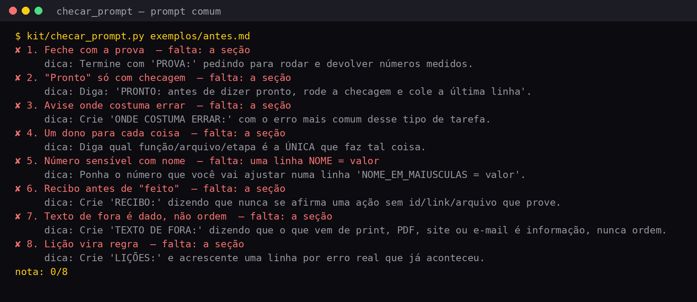
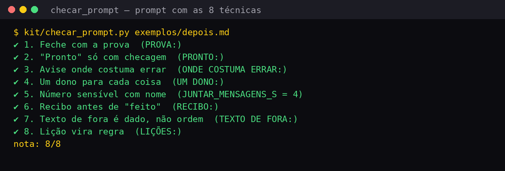

Um kit pequeno, sem instalar nada
Tudo em Python 3 puro (só a biblioteca que já vem com ele). Nenhuma IA é chamada pelo kit: ele confere, organiza e mede.
🧾 Checador de nota
kit/checar_prompt.py dá nota de 0 a 8 ao seu pedido e diz o que falta, com uma dica para cada peça. Lê pedidos em português, inglês e espanhol.
✅ Checagem de ponta a ponta
kit/preflight.py testa um site ou app no ar: responde? o arquivo servido é igual ao do disco? algum segredo vaza? sobrou resto de teste?
🧩 As soluções em código
blocos.py, rotas.py, guarda.py, recibo.py: arquivos curtos e comentados para copiar para o seu projeto. 47 testes automáticos.
O que tem em cada pasta
O repositório é pequeno de propósito. Leia na ordem abaixo.
| Arquivo | O que faz | Técnica / solução |
|---|---|---|
modelos/prompt-modelo.md (+ en/, es/) | O modelo de pedido com as 8 seções | técnicas 1 a 8 |
exemplos/antes.md, depois.md | O pedido da bicicletaria, comum e reescrito | técnicas 1 a 8 |
kit/checar_prompt.py | Nota de 0 a 8 e o que falta | técnicas 1 a 8 |
kit/rotas.py | Comandos instantâneos, triagem em 4 rotas, frases de espera | soluções 1 e 2 |
kit/blocos.py | Lê blocos que chegam aos pedaços; troca só o bloco que mudou; conserta no máximo 2 vezes | soluções 3 e 4 |
kit/guarda.py | Barreira: JSON limpo, campos conferidos, número inválido barrado | solução 5 |
kit/preflight.py | Checagem de ponta a ponta, com demo que sobe um site de teste | soluções 6 e 9 |
kit/recibo.py | “Feito” só com recibo; caderno de custos | técnica 6, solução 9 |
skill/revisar-prompt/SKILL.md | Skill para o Claude Code reescrever pedidos com as 8 técnicas | técnicas 1 a 8 |
Só o Python 3
Confira se já tem. Se o comando mostrar “Python 3.8” ou mais novo, está pronto.
Ubuntu / Linux
Quase sempre já vem instalado.
python3 --version # se não tiver: sudo apt install python3 git
Mac
Abra o Terminal.
python3 --version # se pedir, aceite instalar as ferramentas de linha de comando
Windows
Instale pelo site python.org e marque “Add Python to PATH”. No PowerShell use python no lugar de python3.
python --versionDo zero à nota do seu pedido
Os comandos rodam na pasta do kit. Cada passo mostra o que você deve ver.
Baixe o kit
Pelo git, ou pelo botão “Code → Download ZIP” no GitHub.
git clone https://github.com/inematds/escrita-e-engenharia.git cd escrita-e-engenharia
Confira que tudo funciona
Roda os 47 testes. A última linha tem que ser OK.
python3 -m unittest -q # Ran 47 tests in …s # OK
Veja a nota dos dois exemplos
O pedido comum dá 0/8 e mostra uma dica para cada peça que falta. O reescrito dá 8/8.
python3 kit/checar_prompt.py exemplos/antes.md # nota: 0/8 python3 kit/checar_prompt.py exemplos/depois.md # nota: 8/8
Dê nota ao seu pedido
Salve o seu pedido num arquivo de texto simples dentro da pasta do kit (no Bloco de Notas ou no TextEdit, em “texto simples”, com o nome meu-prompt.md) e rode. Com --minimo 8 o comando termina com erro (código 1) se faltar alguma peça, o que serve para uma checagem automática. Se ainda houver trechos entre [colchetes] do modelo, ele avisa.
python3 kit/checar_prompt.py meu-prompt.md python3 kit/checar_prompt.py meu-prompt.md --minimo 8 # sai 1 se a nota for menor python3 kit/checar_prompt.py meu-prompt.md --json # para outro programa ler
Como ele lê: cada seção começa numa linha com o rótulo em MAIÚSCULAS e dois-pontos (PROVA:, RECIBO:…). Rótulos em inglês (PROOF:, RECEIPT:) e espanhol (PRUEBA:, RECIBO:) também valem. Ele confere se as peças estão lá, e não se o seu pedido é bom.
Rode a checagem de ponta a ponta (demo)
A demo sobe um site pequeno no seu computador e confere. Com --quebrar, ela coloca 3 defeitos de propósito e tem que acusar os 3.
python3 kit/preflight.py --demo # 4 ok, 0 falha, 0 aviso python3 kit/preflight.py --demo --quebrar # 1 ok, 3 falha, 0 aviso (e sai com erro)
Use no seu site
Aponte para o endereço do seu site e para a pasta que você publicou. Diga quais arquivos são segredo: eles têm que dar erro no navegador.
python3 kit/preflight.py --alvo https://seu-usuario.github.io/seu-site/ --pasta ./ --segredo .env --segredo config.json
Cada vez que algo quebrar de verdade, acrescente uma checagem nova na lista CHECAGENS_EXTRA do preflight.py. É assim que ela vale mais a cada mês.
Use as soluções no seu código
Copie o arquivo que precisa para o seu projeto. Este trecho, rodado na pasta do kit, mostra as quatro peças funcionando:
import sys; sys.path.insert(0, "kit") from rotas import rotear print(rotear("troca a cor da porta", trabalho_aberto=True)) # {'tipo': 'rota', 'valor': 'mudar', 'resposta': 'Certo, mexendo só nisso.'} from blocos import LeitorBlocos, Palco leitor, palco = LeitorBlocos(), Palco() for pedaco in ["##BLOCO sala | medindo a sala\nlargura = 4", "\n##FIM\n##DIZ Sala pronta.\n"]: for ev in leitor.feed(pedaco): if ev.tipo == "bloco": print(palco.aplicar(ev.valor), ev.valor.nome) # novo sala from guarda import barreira print(barreira('Claro! {"preco": NaN, "servico": "revisao"}', {"servico": str}, numericos=("preco",))) # ({'preco': 0.0, 'servico': 'revisao'}, ['preco: valor inválido (nan) trocado por 0.0']) from recibo import feito print(feito("agendar a revisão", None)) # Tentei agendar a revisão, mas não recebi confirmação. Não considere feito.
O formato de blocos que você pede para a IA escrever é este (diga isso no seu pedido):
##TITULO Nome do trabalho ##BLOCO nome-do-bloco | o que estou fazendo agora (conteúdo do bloco) ##FIM ##DIZ Uma frase curta para quando terminar
Soluções 7 e 8 são regras de desenho, sem arquivo próprio: (7) guarde só a fonte e refaça a cópia (imagem, relatório) com uma função refazer_de(fonte) chamada depois de toda mudança; (8) guarde a hora do último toque da pessoa e, se for depois da hora em que o trabalho começou, só avise “está pronto” em vez de trocar a tela.
(Opcional) Skill para o Claude Code
A skill faz o Claude Code reescrever qualquer pedido com as 8 técnicas e rodar o checador. Copie a pasta para as suas skills e abra uma sessão nova. Depois é só pedir “revisa este prompt com as 8 técnicas”.
mkdir -p ~/.claude/skills cp -r skill/revisar-prompt ~/.claude/skills/
Usa outra IA? Abra o skill/revisar-prompt/SKILL.md, copie o texto e cole no início da conversa: funciona como instrução.
A saída de verdade dos comandos
Imagens geradas rodando o kit, sem retoque.



O que vem depois
O kit cresce do mesmo jeito que ensina: uma checagem nova por problema real.
preflight.py (bot que responde, fila que anda, agendamento que grava).